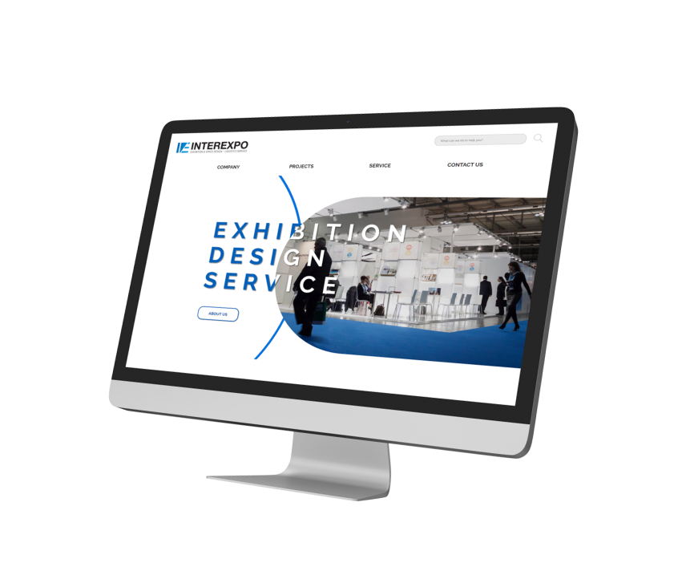

（주）인터엑스포의 해외 홈페이지 디자인 시안을
제작하였습니다.
기업의 로고의 이미지와 맞추어
신뢰성과 전문성을 드러내는 방향으로 작업을
진행하였습니다.
I created a design proposal of Interational website for Inter Expo,
Based on the company＇s logo, I aimed to show its reliability and professionalism.
Personal Project
Project duration： 8 days
Tool：



![Overview. InterExpo is a small medium-sized enterprise that has been specializing in domestic and international exhibitions, conventions, conventions and event management since 2010. MY primary focus was to create a desgin that harmonizes well with the company's existing logo while effectively shwoing the company's professionalism. Commision detail. Refer to the format of the existing site. Create a design that feels approachable to overseas clients. Make use of the attached materials given by the client.](img/interexpo/interexpo_1.jpg)
![The main page consists of a header, main section and footer. Shapes were arranged within the banner to create a look that feels geometric yet refined. Shapes with soft curves were used along with animation to soften what would otherwise feel too rigid. An About us button was placed inside the banner so users can move directly to the company introduction page. Icons were used to create buttons so users can intuitively understand the services available. Keywords paired with matching icons were placed together to highlight the company's strengths.An image that conveys professionalism well was used as the background to help build a sense of trust with users.](img/interexpo/Desktop8.jpg)
![A title was set that hints at the message being emphasized in an indirect way. The title is further emphasized with a long bar shaped element and bold typography. Rounded rectangular column elements were made to drop down diagonally with staggered timing so the eye is drawn to the point where the movement comes to rest. The most important content is emphasized through a gradual shift into blue so it naturally draws attention. As a conclusion to the content above the key phrase to emphasize was pulled out separately and highlighted through contrast to grab attention. A bold shaped element was placed here to break up what could otherwise feel like a monotonous page. A rotating animation was applied to the decorative elements to bring a sense of energy and liveliness to the site. The text, button and highlighter were each given animation with staggered timing to draw the user's attention.](img/interexpo/Desktop9.jpg)